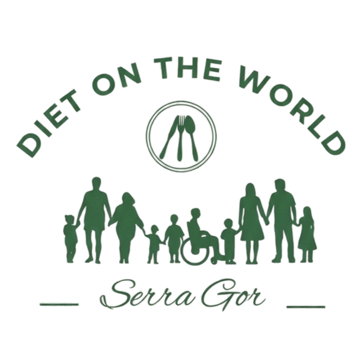
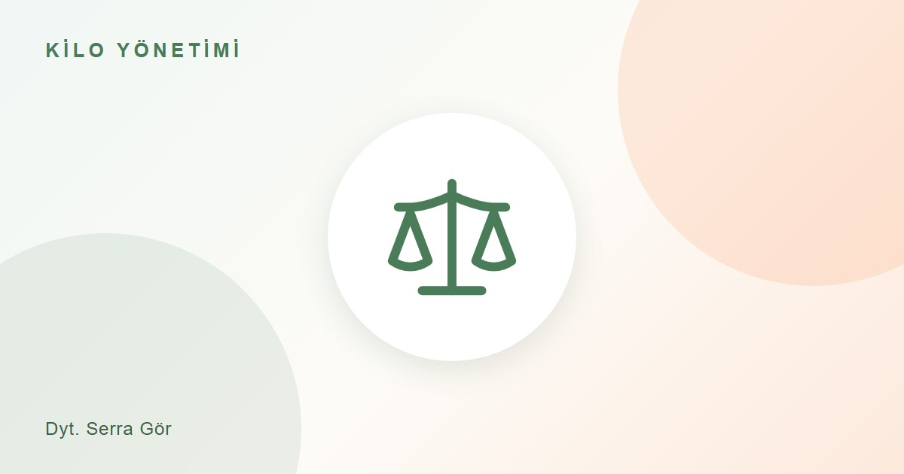

Dyt. Serra Gör
Dün akşam tartıldınız, bu sabah bir kilo fazla çıktı. Moraliniz bozuldu, diyetin boşa gittiğini düşündünüz. Danışanlarımdan en sık duyduğum cümlelerden biri bu. Önce şunu söyleyeyim: bir gecede 1 kilo yağ almak için yaklaşık 7.700 kalori fazla yemek gerekir. Normal bir akşam yemeği bunun çok altında kalır. Yani o bir kilo büyük ihtimalle yağ değil.
Tartı yağı ölçmez, toplam ağırlığınızı ölçer. Bu rakamın içinde su, henüz sindirilmemiş yemek, kas ve yağ birlikte var. Gün içindeki iniş çıkışların çoğu su ve bağırsak içeriğinden gelir. İşte tartıyı oynatan beş yaygın sebep:
Tuz vücutta su tutar. Turşu, cips ya da dışarıda yenen bir yemeğin ardından tartının hemen yükselmesi çok olağan. Bu yağ değil sudur ve birkaç günde normale döner.
Hormon dalgalanmaları nedeniyle döngünün bazı günlerinde vücut daha fazla su tutabilir. Çoğu kadın adetten önceki günlerde tartının yükseldiğini görür. Tartınızı bir önceki haftayla değil, bir önceki ayın aynı dönemiyle karşılaştırmak daha adildir.
Kötü uyuduğunuz ya da yoğun stresli geçen günlerde iştahınız ve yeme düzeniniz değişebilir, vücut da su tutabilir. Tartı kötü görünüyorsa kendinize yüklenmeden önce son günlerinize bir bakın.
Henüz sindirilmemiş yemek de tartıya yansır; kabızlıkta bu fark daha belli olur. Ayrıca vücut karbonhidratı depolarken yanında su da tutar. Bu yüzden bol makarnalı ya da pilavlı bir günün ertesinde kilo yüksek görünebilir. Çok düşük karbonhidratlı diyetlerin ilk günlerinde hızlı düşen kilonun bir kısmının da sudan geldiğini bilmekte fayda var.
Kaslar yeni yüke alışırken geçici olarak su tutabilir. Spora başlayıp tartıda artış görürseniz bırakmayın; bu çoğu zaman geçici bir durumdur.
Tartı kasın mı yağın mı değiştiğini söylemez. Bazen tartı yerinde sayar ama kas artıyor, yağ azalıyordur. Bu yüzden mezura, kıyafetlerin üzerinizde duruşu ve enerjiniz de sürecin parçası. Daha ayrıntılı görmek isterseniz kliniğimizde Tanita cihazıyla kas, yağ ve su oranınızı da ölçüyoruz; bu bir tahmin verir ve zaman içindeki değişimi izlemek için işe yarar.
Birkaç gün içinde hızlı kilo artışına bacaklarda belirgin şişlik ya da nefes darlığı eşlik ediyorsa bunu tartıyla çözmeye çalışmadan doktorunuza başvurun. Tartıyla ilişkiniz sizi her sabah kötü hissettiriyorsa tartılma sıklığınızı diyetisyeninizle konuşun. Tartı bir araçtır, sizi yargılayan biri değil.
Genel bilgiler herkese uymaz. Sağlık durumunuza ve hedeflerinize göre planı birlikte oluşturalım.
Online Randevu Al